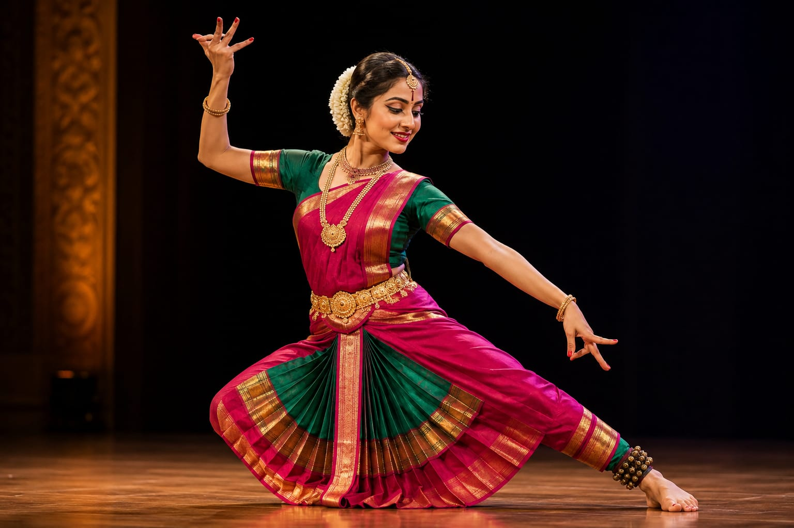

- Imagine you are watching a movie song, music video, or stage show.
- Someone is dancing with a rhythm, expressions, and exciting moves that entertain the audience.
- That professionals are called Dancers.
- 👉 In simple words: Dancers use body movements, rhythm, and expressions to entertain people.
Dancer
🧑💻 What Do They Do?

🎓 How to Become a Dancer
The courses to pursue this career are given below :
These beginner-level courses help students learn dance basics, rhythm, movement coordination, stage confidence, and performance skills.
Certificate in Dance Choreography
Duration: 3 – 6 Months
Eligibility: Class 10 Pass
Entrance Exam: Direct Admission / Practical Audition
Diploma in Dance & Performing Arts
Duration: 1 – 2 Years
Eligibility: Class 10 Pass
Entrance Exam: Direct Admission / Basic Fitness Test
Note: Most beginner dance and choreography courses after 10th focus on practical performance skills and do not require national-level entrance exams.
These undergraduate programs help students improve dance techniques, choreography, stage performance, creative direction, and team coordination skills.
Bachelor of Performing Arts (BPA) in Dance
Duration: 3 – 4 Years
Eligibility: 10+2 Pass (Any stream)
Entrance Exam: CUET UG / Audition
Bachelor of Fine Arts (BFA) in Dance
Duration: 3 – 4 Years
Eligibility: 10+2 Pass (Any stream)
Entrance Exam: CUET UG / University Exam / Meri Based / Audition
Bachelor of Arts (BA) in Dance
Duration: 3 Years
Eligibility: 10+2 Pass
Entrance Exam: Merit-Based Admission / Audition
📝 Exam Details
(Click on the exam name to see full details)
CUET UG Audition University Entrance Exam Merit-Based AdmissionNote: Most dance and choreography degree programs after 12th include practical auditions to test rhythm, coordination, flexibility, and stage performance.
These advanced programs help dancers master choreography, stage direction, creative leadership, and professional performance techniques.
Master of Performing Arts (MPA) in Dance
Duration: 2 Years
Eligibility: BPA or Graduate with dance experience
Entrance Exam: University Entrance Test & Practical Audition
Master of Fine Arts (MFA) in Dance
Duration: 2 Years
Eligibility: BFA or equivalent to Bachelor's Degree
Entrance Exam: University Entrance Test & Practical Audition
Master of Arts (MA) in Dance
Duration: 2 Years
Eligibility: Bachelor's degree in dance
Entrance Exam: University Entrance Test & Practical Audition
Post Graduate Diploma in Choreography / Dance
Duration: 1 – 2 Years
Eligibility: Bachelor's degree (Dance / Performing Arts or equivalent)
Entrance Exam: Merit Based / Practical Audition
Ph.D in Dance
Duration: 3-6 Years
Eligibility: Master's Degree in Dance
Entrance Exam: UGC-NET / University Entrance Exam
📝 Exam Details
(Click on the exam name to see full details)
University Entrance Exam Audition Merit Based UGC-NETThese online programs help students improve dance techniques, rhythm, stage performance, flexibility, choreography, and creative expression.
Online Professional Dance Certification
Duration: 3 – 4 Months
Eligibility: Open to all (Beginner level)
Provider: Udemy / International Dance Academies
Dance Technique Masterclass
Duration: Self-paced (12+ Hours)
Eligibility: Open to all
Provider: MasterClass Platform / Dance Masterclass
Indian Classical Dance Theory & Culture
Duration: 4 – 12 Weeks
Eligibility: Open to all
Provider: Swayam / Government e-Learning Portals
Certificate in Dance & Cultural Management
Duration: 3 Months
Eligibility: 10+2 Pass or equivalent
Provider: IISDT (Indian Institute of Skill Development Training)
Certificate in Dance Education (CiDE)
Duration: Flexible (4 Weeks to 3 Years)
Eligibility: Open to dance educators and advanced students
Provider: NDEO (National Dance Education Organization) – OPDI Program
Note: Most online dance programs focus mainly on practical training, performance videos, and creative assignments instead of written entrance exams.
Note:
(Age limits, marks, and admission process may vary depending on the college or state. These courses are available in many colleges and universities across India. You can choose colleges based on your location, budget, and entrance exams.)
🏛️ Top Dance Colleges & Institutes in India
(Tap on a college to view details)
After 10th (Certificates & Short-Term)
Terence Lewis Professional Training Institute (TLPTI), Mumbai Indira Gandhi National Centre for the Arts (IGNCA), New Delhi Kathak Kendra (National Institute of Kathak Dance), New DelhiAfter 12th (Degrees & Professional Diplomas)
Kalakshetra Foundation, Chennai Christ University, Bengaluru Nalanda Nritya Kala Mahavidyalaya (University of Mumbai), Mumbai Kerala Kalamandalam, ThrissurAfter Graduation (PG & Advanced Craft)
Rabindra Bharati University, Kolkata Indira Kala Sangeet Vishwavidyalaya (IKSVV), Khairagarh Jain University, BengaluruSTEP 1
Imagine you are working as a Dancer.
STEP 2
You practice dance moves, expressions, and stage performance every day.
STEP 3
You perform in stage shows, music videos, films, or competitions.
STEP 4
If this excites you, this career may suit you.
Where do Dancers work? (Job Roles + Growth)
Dancers work in : Movies, Television programs, Music videos, Live stage shows, Theatre productions, Dance companies, Advertisements, Cultural performances, and other Entertainment productions.
🟢 Beginner Roles
Background Dancer
(After Certificate in Dance / Online Course)
Performs in group dance scenes.
Assistant Dance Instructor
(After Diploma in Dance / Performing Arts)
Helps students learn dance basics.
🔵 Mid-Level Roles
Lead Company Dancer
(After BPA / BA in Dance + Experience)
Performs important dance roles.
Studio Dance Teacher
(After Diploma / BA in Dance + Experience)
Teaches dance styles to students.
🟣 Advanced Roles
Principal Dancer
(After MPA / PG Diploma + Experience)
Performs lead dance performances.
Dance Studio Owner / Director
(After MPA + Experience)
Manages dance training programs.
International Dance Companies
They hire dancers for stage performances and world tours.
Film & Music Industry
Dancers perform in movies, concerts, and music videos.
Social Media & Content Creation
Dancers create videos for YouTube, Instagram, and global audiences.
Online Dance Training
You can teach dance classes to students worldwide.
(Click Yes or No for each question)
1. Do you like dancing?
2. Do you enjoy performing in front of people?
3. Have you ever tried learning dance steps from movies or social media?
4. Imagine you are working as a Dancer in a music video. The dance steps for the song have already been decided, and you need to learn them. You practise the steps with the other dancers. You make sure your dance moves match the music and stay in coordination with the group. When the music video is released, viewers see your performance on screen. Do you like this type of work?
5. You are invited to give a solo classical dance performance at a cultural event. You learn the dance routine and practise it many times. You work on your expressions, hand movements, and footwork to perform the dance well. When you perform on stage, the audience watches your performance and appreciates your dance. Does this type of work interest you?